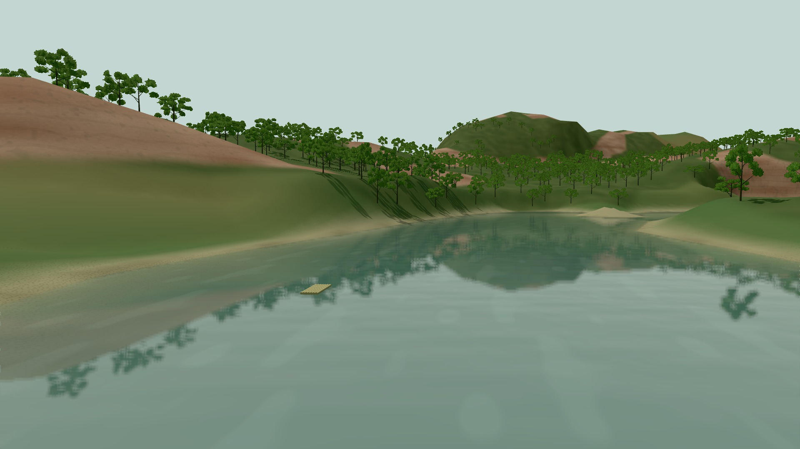
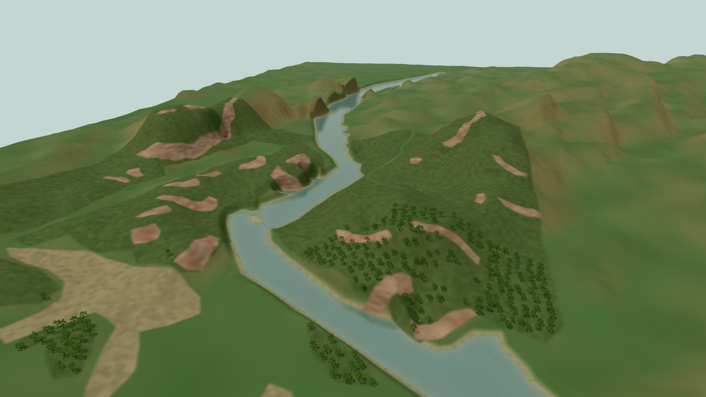
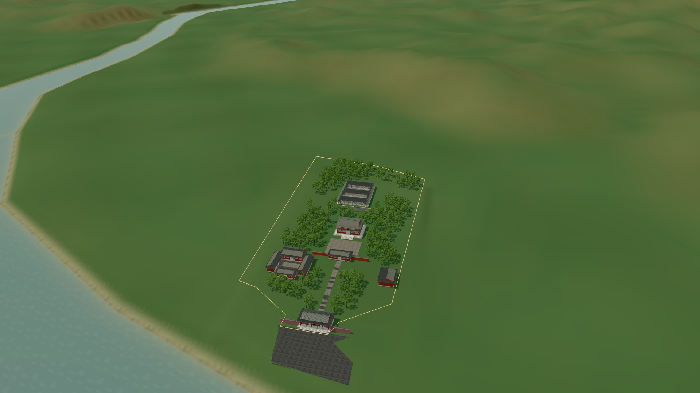
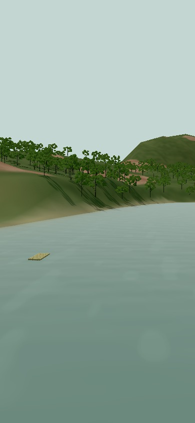

问山 · 龙虎山 / 阶段核验
日照投影与岸边接触阴影
已将地形、独立宫观外观及枝叶模型纳入同一套自然日照投影。水面漫反射与太阳高光响应岸边遮挡，环境倒影继续实时更新。静止视角复用阴影贴图，近景提高局部精度；低画质采用较小贴图。
当前仍是粗 DEM 地形与已有建筑阶段模型。本次改善的是受光和遮挡关系，不代表完成精细丹霞地形、象鼻山石拱或真实内部漫游。
以下对比均为同一版网站、固定时间和镜头下关闭／开启阴影的渲染截图，不是实拍照片，也不是前一阶段全部代码的对比。
泸溪河近景

关闭日照阴影 开启日照阴影
开启日照阴影河谷远景

关闭日照阴影 开启日照阴影
开启日照阴影天师府区域

关闭日照阴影 开启日照阴影
开启日照阴影实际运行 · 10 秒流水与竹筏
录制自本地生产预览：沿河流动、波纹、竹筏尾流和反射均来自实时场景。
性能与验证
| 测量场景 | 平均 FPS | p95 帧时间 / ms |
|---|
| Desktop 1920x1080, mapped river, planar reflection | 59.6 | 21.0 |
| Desktop close river, planar reflection | 50.0 | 27.7 |
| Mobile 390x844 low, same desktop GPU | 137.7 | 7.2 |
本机 Windows、Chrome 154、桌面 GPU，每项连续 8 秒。表中为完整页面持续运行测试；手机项仅模拟 390×844 视口，未进行实体手机验证。平均值不代表稳定帧率下限。
阴影专项 9 项、流水回归 14 项通过；静止贴图复用、近景精度、跨区域恢复、低画质及阴影渲染目标释放均有记录。另有构建及原有交互回归记录，详见本阶段检查点。
查看原始测量与验证记录 · 打开当前网站
手机视口

1024 阴影贴图；此图来自桌面浏览器模拟视口。岩壁资料核查
新增保存了中新社摄影记者刘力鑫 2024 年 9 月 7 日的泸溪河航拍组图及 2017 年航拍视频，供本地定位研究。候选岩壁位置的首轮照片配准误差较大，尚未形成可靠控制点，未据此改动地形轮廓。
2024 航拍来源（新华网转载中新社） · 2017 中新社航拍来源
原图和影像仅保存在 E 盘研究目录，本页不再分发。该视频不是目标文件所列抖音视频；原抖音参考的访问限制仍未解除。